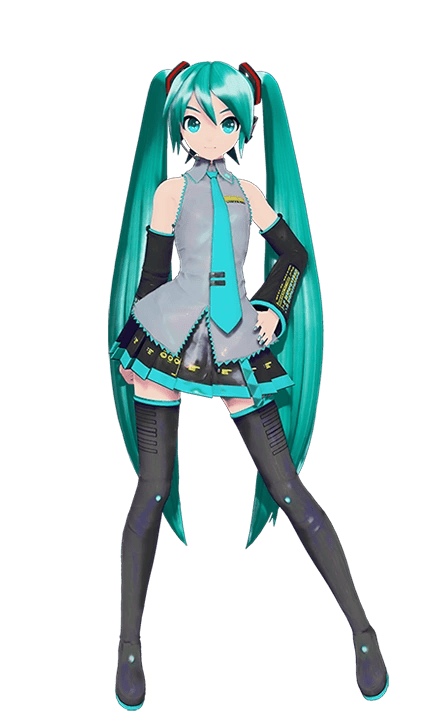

System is ready. Do you want to continue your progress or initialize a new link?
To enter Customize mode, the system will generate a recovery point. You must keep this file to maintain your changes.
Proceed with backup and module selection?
Default interface: MITAI Classic UI is active.